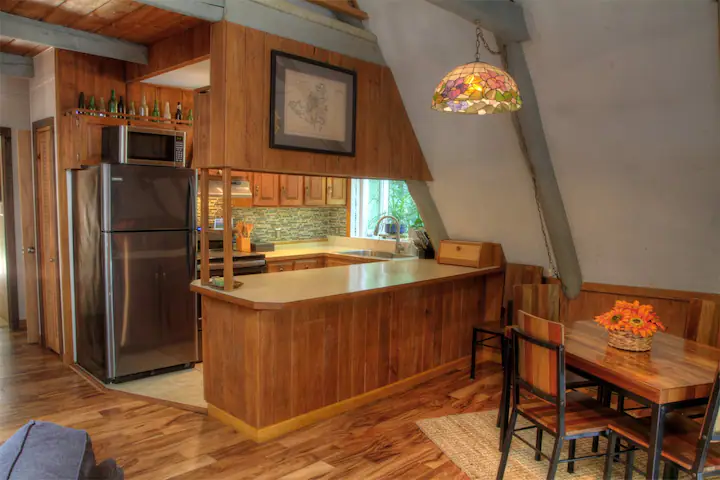

O Chalé Ruisseau é a hospedagem dos sonhos, situada em Boone, na Carolina do Norte, Estados Unidos. Este espaço privado é composto por três quartos e dois banheiros, acomodando confortavelmente até cinco hóspedes. O chalé oferece climatização com aquecimento central, segurança doméstica completa, acesso à internet e escritório, além de área de serviço e cozinha totalmente equipada. O estacionamento também está incluído.
Em média, uma noite no Chalé Ruisseau custa R$990. A política de cancelamento é gratuita até um dia antes do check-in, com reembolso integral. Se o cancelamento ocorrer no dia do check-in, haverá reembolso parcial.
O Chalé Ruisseau está situado nas encostas da cordilheira acima de Boone, na Carolina do Norte. Cercado por uma exuberante área de mata e com o rio Doe Fork passando pelo quintal, você se sentirá escondido no coração da região de Blue Ridge, embora esteja a poucos minutos da cidade.
O espaço possui dois andares privativos, que são reservados exclusivamente para os hóspedes. O proprietário do chalé fica em uma área separado no térreo, o que significa que não há áreas compartilhadas entre os hóspedes e o proprietário.
Você terá acesso privado a todos os conveses, a todo o quintal e a uma pequena sauna a vapor privativa coberta.


O Chalé Ruisseau é aconchegante por si só, mas há ainda mais motivos para você se encantar. Além de um ambiente interno aconchegante, a residência oferece um quintal amplo, uma varanda privativa e móveis externos para que você possa desfrutar da natureza ao redor. Também há uma fogueira para as noites de frio e, nas proximidades, você pode encontrar um lago e um rio para explorar.
Em caso de neve, é necessário utilizar um veículo com tração integral ou 4x4 para acessar o Chalé. Além disso, é importante contar com uma alta folga caso haja acumulações de mais de 6 polegadas, já que a estrada final não é arada. Os últimos 400 metros do caminho são feitos por uma estrada de cascalho bastante irregular. O estacionamento é limitado, sendo adequado para até dois carros. Se houver três veículos, pode ser necessário encontrar alternativas para estacionamento.